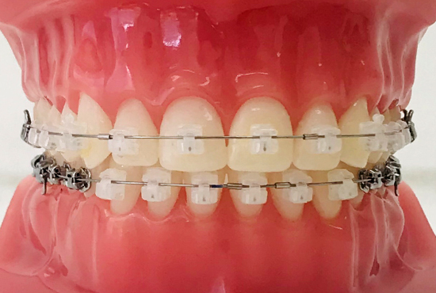

矯正歯科
矯正治療はお子さまが受けるというイメージが強いかもしれませんが、
基本的に年齢制限なく受けることができます。
近年は口元のコンプレックスを解消するだけでなく、健康意識の高まりから矯正治療を希望される大人の方が増えています。歯並びを整えると噛み合わせが改善し、食べ物の消化が良くなったり頭痛や顎関節症が和らいだりといった効果が生まれます。
矯正治療で、心も体も健康になりましょう。
ホワイトワイヤー
ホワイトワイヤーは、表面を白くコーティングしたワイヤーや、白色合金製のワイヤーなどがあります。歯に取り付けるブラケットも白いセラミックでできているので、金属製のワイヤーに比べると目立ちません。
ただし、治療の過程でワイヤーを曲げるなどの必要がある場合は、白いコーティングが剥げるため使用できないことがあります。

マウスピース
透明なマウスピースを取り替えながら矯正します。目立たないうえ、取り外しが可能なので歯磨きや食事の際に煩わしさがありません。一日に装着する時間が決められているため、自己管理が必要です。症状によっては、適応症でない方もおられます。

セルフライゲーションブラケット
ブラケットが持つシャッターやクリップの構造により、ゴムや結紮線を使わずにワイヤーを固定するシステムです。目立たないだけでなく、小さい力で歯を動かすので痛みを軽減できます。